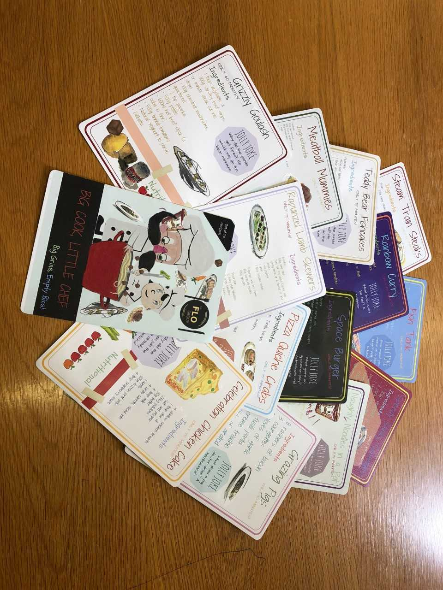

Sort by: Relevance Relevance Date |
Web |
Image |
The Product
We don’t always have time to cook, especially not for the whole family. Finding recipes, buying the ingredients, setting everything up… it all takes time. With Big Cook Little Chef Recipe Cards, you don’t need to worry. Simple recipes with everyday ingredients have never tasted so good…
· No time? No problem!
No need to spend time shopping for ingredients or slow-roasting food.
· Fun for all!
Kids can join in with adults; steps are designed with children of all ages in mind.
· Your dinner, your way…
Creative, flexible recipes and quirky serving suggestions put the fun into functional.
· Honest, hearty, healthy
Balanced recipes ensure kids aren’t fussy while staying healthy.
Big Cook Little Chef Recipe Cards come in a starter pack of 14 invigorating, interesting and inviting recipes all hand-picked by us. They are presented in bright and friendly colours on a glossy water-resistant playing card material, cellophane wrapped with instructions and hand-drawn serving suggestions.
The Aim
Aside from providing a superior cooking experience, we have our own reasons for offering Big Cook Little Chef Recipe Cards. We believe that family values that are important to a happy life are slowly becoming less and less common. Our market research showed that most people don’t eat with their families, much less cook with them. Below is what we believe to be the most important features of cooking at home.
Cooking From Scratch
We believe the first step to big grins and empty bins is simply to stop buying ready meals. By doing so, not only are you eating generally unhealthy, poor quality ingredients, but you are buying packaging that is often not recyclable. Cooking often is considered to be a therapeutic experience and by cutting ready meals out of your life you are one step closer to culinary harmony. Our cards help even a novice to cook amazing meals from scratch.
Eating With Family
Cooking often gives you such a satisfying experience as it makes you feel like you have contributed to something important. What use is that feeling if those around you aren’t there to share in that euphoria? Sharing your meals with those you love vital to achieving that ideal kitchen experience. Our cards give hand drawn serving suggestions to help bring your meals to life in front of family and friends.
Cooking With Family
Why not take it a step further? Cooking is a very social activity and becomes even more enjoyable when cooking with someone you care about. Whether cooking with your parent, child, partner or friend, the meal you create will mean more to both of you. Why not spend time away from technology and online recipes to bring yourself back to a simpler time where cooking from scratch was social, personal and an everyday occurrence? Our cards have child and parent sections so loved-ones of all ages can join in with the cooking fun.
Empty Bins
People often say that cooking from home is messy and wasteful, but it doesn’t have to be this way! Cooking from scratch can be a good way to make sure left over ingredients get used. You eliminate the need for unrecyclable packaging that comes with ready meals. Our cards can help you manage your food waste and always find something you can cook with ingredients you have left over.